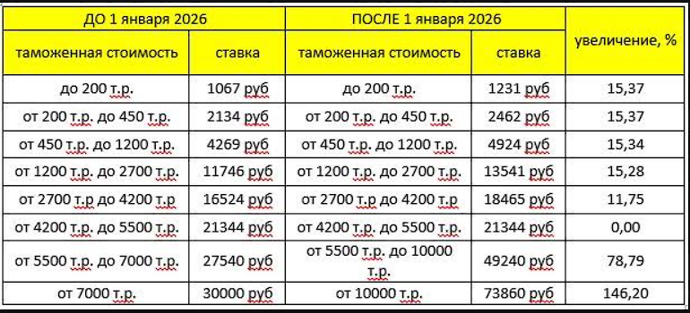

Расчёт таможенных платежей
Ниже — алгоритм расчёта таможенной пошлины и НДС при ввозе товаров на таможенную территорию РФ, с реальным примером.
Алгоритм расчёта
- Определить таможенную стоимость (ТС) = цена товара + расходы на доставку до границы ЕАЭС + страхование + прочие расходы, напрямую связанные с товаром до пересечения границы (упаковка, тара, комиссии, лицензионные платежи и др., если они не включены в цену).
- Рассчитать ввозную пошлину = ТС × ставка пошлины (по коду ТН ВЭД).
- Рассчитать НДС = (ТС + пошлина) × ставка НДС (по действующей ставке).
- Сумма платежей = пошлина + НДС (+ таможенные сборы за операции).
Порядок формирования таможенной стоимости установлен главой 5 Федерального закона от 03.08.2018 № 289-ФЗ «О таможенном регулировании в Российской Федерации» (с учётом главы 5 Таможенного кодекса ЕАЭС).
Реальный пример
Товар: инвертор Deye SUN-6K-SG05LP1-EU-SM2-P, гибридный солнечный, 6 кВт.
Доставка: Шанхай → Москва, один контейнер 20 футов.
Исходные данные
| Параметр | Значение |
|---|---|
| Код ТН ВЭД | 8504 40 850 0 (инвертор) |
| Ставка ввозной пошлины | 0% |
| Ставка НДС | 22% |
| Стоимость товаров в контейнере | 3 453 750 ₽ |
| Фрахт Шанхай → Владивосток | 3 500 USD |
| Курс ЦБ РФ (на дату расчёта) | 82,9803 ₽/USD |
Шаг 1. Фрахт в рублях
3 500 × 82,9803 = 290 431,05 ₽
Шаг 2. Страховая премия
Страхуется груз, а не услуга транспортировки: стоимость доставки в страховку не входит, если услуги транспортировки выделены отдельно в документах. Поэтому база для страхования = стоимость товара = 3 453 750 ₽.
Страховая сумма = база × 110% = 3 453 750 × 1,10 = 3 799 125 ₽.
Страховая премия = страховая сумма × 0,5% = 3 799 125 × 0,005 = 18 995,63 ₽.
Шаг 3. Таможенная стоимость
ТС = товар + фрахт до границы + страхование = 3 453 750 + 290 431,05 + 18 995,63 = 3 763 176,68 ₽.
Шаг 4. Ввозная пошлина
ТС × 0% = 0 ₽.
Шаг 5. НДС
(ТС + пошлина) × 22% = 3 763 176,68 × 0,22 = 827 898,87 ₽.
Итог
| Платёж | Сумма |
|---|---|
| Ввозная пошлина | 0 ₽ |
| НДС 22% | 827 898,87 ₽ |
| Сбор за таможенные операции | 18 465 ₽ |
| Итого таможенные платежи | 846 363,87 ₽ |

Полная стоимость для импортёра (товар + фрахт + страхование + НДС + таможенные сборы) ≈ 4 609 541 ₽ — без учёта перевозки Владивосток → Москва.